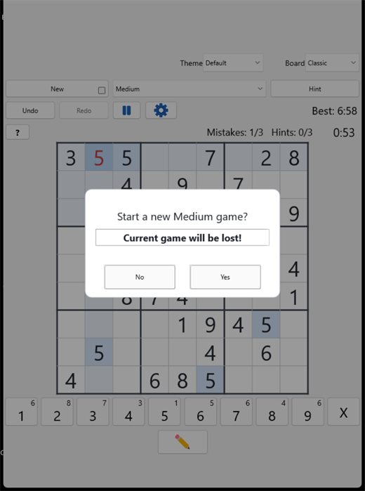
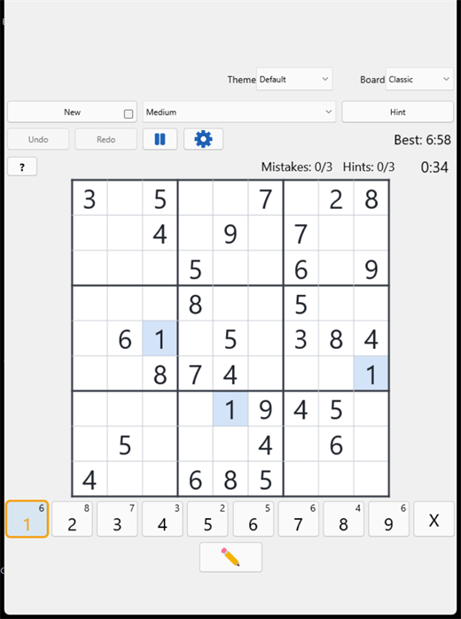
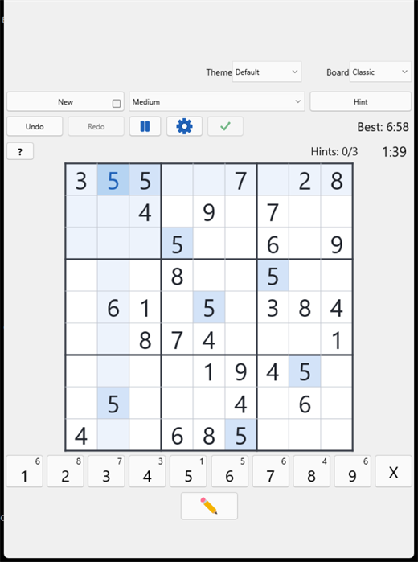
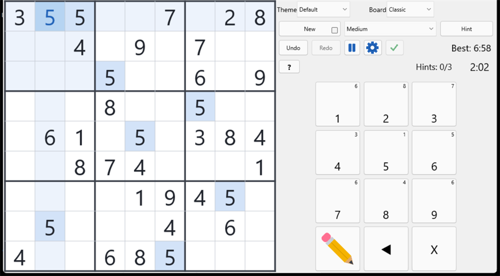

Fill the 9×9 grid so that every row, every column, and every 3×3 box contains the digits 1–9 with no repeats. Some cells start filled — those are your clues.
Every puzzle in Simply Sudoku has exactly one solution, so you can always get there by logic alone. You never have to guess.
Starting a game
Tap New at any time for a fresh puzzle. If a game is already in progress you’ll be asked to confirm first, so you never lose a puzzle by accident.
Choosing difficulty: pick Easy, Medium, Hard, or Expert. Two settings decide what you get on launch — a Default level (the level every new game starts at), and “Ask me for a level when the game opens”, which pops up a quick difficulty picker each time the app starts.
Skip the confirmation: a small “Don’t warn on New” checkbox sits right beside the New button. Tick it and tapping New starts a fresh puzzle immediately, without asking. (Changing difficulty mid-game still confirms, so you can’t wipe a game just by tapping a level.)

Tapping New mid-game asks first — unless you’ve ticked “Don’t warn on New”.
Reading the board
Tap any cell and the board helps you scan it: its row, column, and 3×3 box are highlighted, and every cell holding the same number lights up too — perfect for spotting where a digit can still go.
Your original clues and the numbers you enter are always easy to tell apart.
Entering and erasing numbers
Two ways to place a digit: tap a cell to select it, then tap a number on the keypad — or use the sticky pen (below). On a computer you can also use the arrow keys to move and 1–9 to type.
Erase: tap the selected cell’s number again to clear it, or press 0 / Delete / Backspace. Each keypad button also shows a small remaining-count badge — how many of that digit are still left to place — counting down to zero as you fill the grid.
Sticky numbers (the “pen”)
When you want to place a lot of the same digit, make it “sticky.” Press and hold a number button for about half a second — it turns amber to show it’s now your active pen. Every empty cell you then tap gets that digit, so you can sweep through all the 7s (say) without reselecting the number each time.
Tap the same number again to switch the pen off.
Tap a cell that already has a number and the pen switches off, selecting that value instead — so highlights never stack up.
The sticky pen respects Notes mode: with notes on, it pencils the digit in as a candidate instead of placing it.

The 1 key glows amber — it’s now the active pen, and every 1 already on the board is highlighted.
Pencil notes
Tap the pencil button (or press N) to enter Notes mode — the button stays pressed while it’s on. Now tapping numbers pencils small candidates into a cell instead of placing a final answer. When you later place a correct digit, Simply Sudoku automatically clears that candidate from the row, column, and box for you.
Hints
Stuck? Tap Hint (or press H). After a quick confirm, one correct digit appears in green on a pale-green cell, and an unobtrusive bar asks “Keep this hint?” — Keep commits it, Undo removes it.
Either way it counts toward your hint limit, which depends on difficulty (Easy allows the most; Expert the fewest). When your hints are used up, the button disables.
Undo, redo & the timer
Undo and redo are unlimited — step back and forward through your moves with the on-screen buttons or Ctrl+Z / Ctrl+Y. A timer runs while you play, and Simply Sudoku records your best time for each difficulty, shown right on screen and celebrated when you beat it.
Mistakes & the mistake limit
By default, a wrong entry is shown in red, and the status line tracks Mistakes: used / max. Each difficulty has a mistake limit — reach it and the game ends with Game Over, where you can Retry the same puzzle or start a New Game. Prefer no safety net at all? See the next section.
Check-when-ready mode
In Settings, turn off “Highlight wrong numbers” for a pure challenge: mistakes are no longer shown in red, the mistake counter disappears, and you can’t lose on the mistake limit.
Instead, a ✓ Check button appears. It stays disabled until every cell is filled, so you complete the whole puzzle first, then check it in one go. If it’s right, you win; if not, a “Not quite right” message lets you Keep Trying or Quit.

With highlighting off, the mistake counter disappears and a green ✓ Check button joins the toolbar.
Pausing
Tap Pause to stop the clock — the board hides behind a “Paused” panel you tap to resume. The game also pauses automatically whenever you switch away from the app, and resumes when you come back. (A pause you started by hand stays paused until you resume it yourself.)
Make it yours — themes & board looks
Two dropdowns on the main screen set the mood. Theme restyles the whole app (light, dark, warm, high-contrast and more). Board recolours just the 9×9 grid — 12 looks including Classic, Paper, Mint, Slate, Rose, Lavender, Sunset, Midnight, Forest and Charcoal.
Mix and match to taste; your choices are remembered next time.
Playing in landscape (and left-handed)
Turn your phone sideways and Simply Sudoku reflows to a two-column layout — the board on one side, a phone-style 3×3 keypad on the other. Tap the ◀ / ▶ arrow in the keypad to swap the board and controls to the other side, so the keypad falls under your thumb whether you’re left- or right-handed. Your chosen side is remembered.

Landscape play — a 3×3 keypad on the right, with the ◀ flip control to move it to the other side.
Your privacy & screenshots
Simply Sudoku works completely offline and stores your game, best times, and settings only on your device. On Android, the app also blanks its preview in the app-switcher by default (which also blocks screenshots) so a paused puzzle can’t be studied off the clock. Want screenshots anyway? Turn on “Allow screenshots” in Settings.
Simply Sudoku has no ads and no marketing budget — it grows by word of mouth. A quick rating and review, especially on Google Play and the App Store, is the single biggest way to help others discover it. It takes a minute, and it means the world.